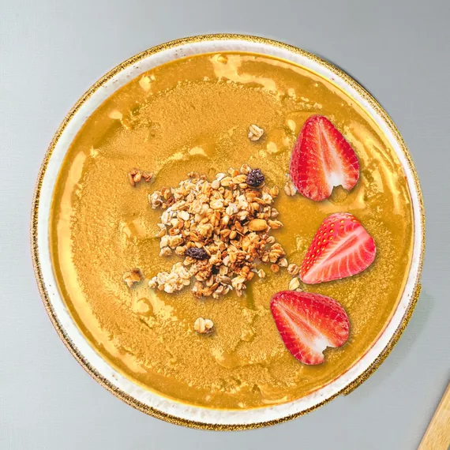
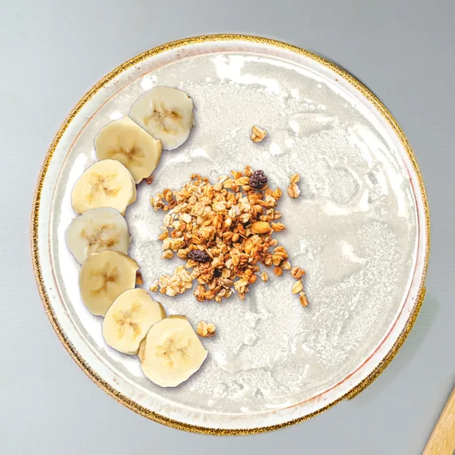

3 min read
Açaí bowl toppings: what to put on top, and how
The four açaí bowl toppings we use (granola, banana, strawberry and coconut), how to lay them out, and ten bowls to try. Build any of them in the bowl builder.
An açaí bowl is a cold scoop of açaí with good things on top, and the toppings are where it becomes yours. Here are the four toppings we use, how to lay them out, and ten bowls to start with, one for each Austropical flavor.
 The Amazon WorksOrganic Açaí Original Sensation, all four toppings
The Amazon WorksOrganic Açaí Original Sensation, all four toppings
The Mango Berry CrunchOrganic Mango with granola and strawberry The Dragon Berry IslandDragon Fruit & Pineapple with banana, strawberry and coconut
The Dragon Berry IslandDragon Fruit & Pineapple with banana, strawberry and coconut
The Coco Banana CrunchOrganic Coconut with granola and banana
Serving suggestions; toppings are not included. Tap a bowl to open it in the bowl builder.
What toppings go on an açaí bowl?
Our bowl builder uses four: granola, banana, strawberry and coconut. Each one brings something different.
- Granola, for crunch. It is the contrast that makes a cold, smooth bowl interesting.
- Banana, for soft, mellow sweetness. Slice it into coins and they sit flat on the sorbet.
- Strawberry, for something bright and juicy, and a flash of red. Halve or slice the berries.
- Coconut, to finish. Flakes or chips add a light bite and a tropical note.
Plenty of other toppings work as well: blueberries, kiwi, mango or pineapple pieces, a drizzle of agave syrup or nut butter, cacao nibs, a spoon of chia seeds. When you pick, aim for contrast: something crunchy, something soft, something bright.
How do you arrange toppings on an açaí bowl?
Three layouts cover most bowls.
- Rows. Each topping in its own stripe across the bowl. The classic café look, and the easiest to photograph.
- A crescent. Fruit fanned around one side, granola piled in the middle. That is how the bowls on this page are built.
- A pile. Everything in the center, with sorbet showing all around. Quick, and fine for a weekday.
Whichever you choose, put the toppings on top rather than stirring them in. The granola stays crunchy, and the bowl keeps its look.
When should you add the toppings?
Last, right before you eat. Sorbet softens quickly at room temperature, and granola is crunchiest when it goes on at the end. Scoop, top, eat.
How many toppings should you use?
One to four. A single topping makes a clean, simple bowl; all four make a full one. Start with a 2/3-cup scoop of sorbet, the serving size on our pint, and add toppings until the bowl looks right to you.
Ten bowls to try
One for each Austropical flavor. Each name opens the bowl builder with that bowl already made, so you can see it, change it and share it.
- The Amazon Works: Organic Açaí Original Sensation with granola, banana, strawberry and coconut. The classic.
- The Midnight Berry: Açaí Zero Sugar (Not a low calorie food.) with strawberry.
- The Sunrise Banana Crunch: Açaí Banana Sunrise with granola and banana.
- The Crush Banana Berry: Açaí Strawberry Crush with banana and strawberry.
- The Mango Berry Crunch: Organic Mango with granola and strawberry.
- The Coco Banana Crunch: Organic Coconut with granola and banana.
- The Passion Berry Island: Passionfruit with strawberry and coconut.
- The Dragon Berry Island: Dragon Fruit & Pineapple with banana, strawberry and coconut.
- The Rosy Berry Island: Pink Guava & Acerola with strawberry and coconut.
- The Cupuaçu Banana Crunch: Cupuaçu & Coconut with granola and banana.
Build your own
The bowl builder on our Serving ideas page puts any of the ten flavors in the bowl and the four toppings beside it. Tap a topping and it lands in the bowl. Every bowl gets a name, and you can share the picture or save it. Not sure which flavor to start with? Find your flavor in four taps.
Related: How to make a pitaya bowl without a blender · How to set up an açaí bowl bar for a party · How to make an açaí bowl at home without a blender · All ten flavors · Serving ideas
Austropical açaí and tropical fruit sorbets come to US freezers in March 2027. The first container carries Organic Açaí Original Sensation and Organic Mango; the rest of the range follows.
Serving suggestions; toppings are not included. Açaí Zero Sugar: Not a low calorie food. Product of Brazil.